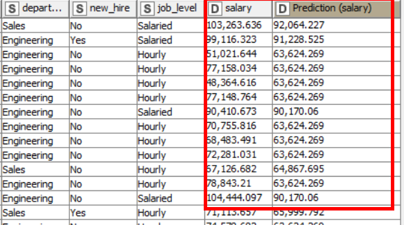
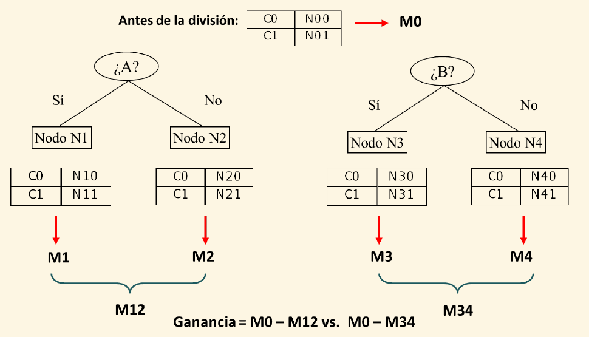
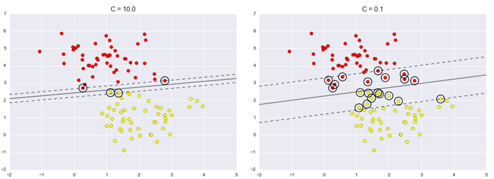

Es un aspecto del Machine Learning (ML) que consiste en inferir una función a partir de un conjunto de datos etiquetados
Estos datos están formados por un vector de valores (variables) y un atributo de clase
La función inferida debe ser capaz de predecir la clase a partir de los valores observados
Debe ser capaz de generalizar con instancias no vistas
Problema de overfitting (sobreajuste)
Para que podamos resolver este tipo de problemas, los datos han de estar etiquetados de antemano
El etiquetado de datos es un negocio millonario hoy día
Existen otras opciones como el etiquetado automático
1.2 Tipos de machine learning supervisado
Plateamiento del problema de machine learnig supervisado
\[\begin{equation}\label{eq:ml}
T = x_1, x_2,.., x_n,
X = x_1, x_2,.., x_n
\end{equation}\]
A partir de un conjunto de ejemplos de la tabla T el modelo aprende: y = f(X) y: es clase objetivo o varible dependiente X: variables independientes
Tipos:
Clasificación: Si la atributo y es discreto o nominal
Predicción: Si y es continuo
En el proceso hay dos fases:
Aprender la función f con los datos históricos de T
Aplicar dicha función sobre nuevos casos (o filas) de la tabla X_futuro con el mismo formato de X para calcular el valor correspondiente y
1.3 Ejemplos aplicación de ML Supervisado
En un hospital se miden 17 variables distintas (edad, presión sanguínea, etc.) de los pacientes de nuevo ingreso
Se necesita un sistema de toma de decisiones: ¿el paciente debe ser ingresado en una unidad de cuidados intensivos?
Como las camas de la UCI son muy caras, el sistema debe ser capaz de identificar aquellos pacientes que no vayan a sobrevivir más de un mes
El problema consiste en identificar a los pacientes de alto-riesgo y discriminarlo de aquellos de bajo-riesgo
1.4 Ejemplos aplicación de ML Supervisado 2
Una compañía de tarjetas de crédito recibe cientos de solicitudes diarias con datos de sus clientes:
Edad
Ingresos anuales
Estado civil
Calificación crediticia…
El sistema debe ser capaz de identificar aquellas solicitudes que deben ser aprobadas y aquéllas que deben ser rechazadas
1.5 Conceptos básicos de clasificación
Objetivo principal: Aprender un modelo a partir de datos previamente etiquetados
¿Con qué fin? Clasificar instancias no vistas previamente sin etiqueta de clase
Es similar al proceso de aprendizaje humano: nosotros aprendemos de experiencias previas y un modelo de clasificación de datos previamente etiquetados
1.6 Concepto de apredizaje
Aprendizaje: Dado un conjunto de datos D, una tarea T y una medida de rendimiento M, aprender un modelo quiere decir que podamos hacer la tarea T mejor que si no tuviéramos el modelo de acuerdo a la medida M
Asumimos que el conjunto de datos del que disponemos sigue la misma distribución que los datos reales:
A veces esta condición no se cumple
Si la violación de esta condición es muy fuerte la capacidad predictiva del modelo será muy pobre
Por eso es importante evitar el overfitting…
1.7 Proceso de aprendizaje en clasificación
Aprendizaje de un modelo con un conjunto de datos de entrenamiento. Existen diversos enfoques de este proceso (validación cruzada, etc)
Validación del modelo en un conjunto de instancias de test (no vistas hasta ese momento)
1.8 Proceso de aprendizaje en clasificación. Validación
Tenemos que confrontar lo predicho con lo que realmente estaba clasificado cada una de las filas
Esto es posible ya que el conjunto de test tiene el mismo origen que el de entrenamiento
El conjunto de test cumple la función de validar cómo se va a comportar el modelo ante datos nuevos que no conoce
1.9 Proceso de aplicación modelo de clasificación
Los modelos de preprocesamiento (si es que ha sido necesario hacerlo) y de machine learning son aplicados a los datos reales para que prediga la clase objetivo y su probabilidad
1.10 Matriz de confusión
Nos permite validar un clasificador
Para un clase objetivo binaria sería:,
1.11 Matriz de confusión. Medidas asociadas
Verdaderos Positivos (TP)
Verdaderos Negativos (TN)
Falsos Positivos (FP) (Error Tipo I)
Falsos Negativos (FN) (Error Tipo II)
Sensibilidad//Recall/: TP/(TP+FN)
Razón de Falsos Positivos: FP/(FP+TN)
Accuracy: (TP+TN)/(TP+TN+FP+FN)
Precision: TP/(TP+FP)
Especicifidad: TN/(TN+FP)=1-FPF
1.12 Matriz de confusión para multiclases
La matriz de confusión se puede generaralizar cuando tenemos más de dos clases objetivo
1.13 Especificidad y sensitividad
Hay que añadirlas siempre al cálculo de la precisión, especialmente con problemas desbalanceados
1.24 Selección del modelo (K-fold cross validation)
1.25 Random subsampling cross validation
Consiste en dividir la BD en k subconjuntos entrenamiento/test con muestreo aleatorio sin reemplazamiento
En cada división se extrae el modelo con el conjunto de entrenamiento y se evalúa con el de test
La estimación se promedia
1.26 Leaving-one-out
Es un caso especial de validación cruzada en el que k es igual al número de registros
Tiene la ventaja de que el proceso es determinista y de que en todo momento se utiliza el máximo posible de datos para la inducción del clasificador
Se utiliza en BBDD muy pequeñas, debido a su alto costo computacional
1.27 Bootstrap
Está basado en el proceso de muestreo con reemplazo
A partir de una BD con n registros se obtiene un CE con n casos
Como conjunto de test se utilizan los registros de la BD no seleccionados para el de entrenamiento
¿Cuántos casos habrá en el de entrenamiento? ¿qué porcentaje respecto a n?
Esta técnica se conoce como 0.632 bootstrap (ese % para entrenamiento y resto para test)
Se calcula partiendo de que la probabilidad de elegir un registro sea 1/n
El error sobre el CT suele ser bastante pesimista por lo que se corrige
1.28 Elección del tamañano y número de particiones
Alto número de particiones entrenamiento / test:
Sesgo de la estimación del error pequeño: Estimador bastante preciso
Alta varianza del estimador
Costo computacional alto
Bajo número de particiones entrenamiento / test:
Sesgo alto de la estimación
Varianza baja
Costo computacional reducido
La elección del número de particiones depende del tamaño del conjunto de datos
Para datasets grandes, 3 es un número es adecuado
Para datasets pequeños, mayor e incluso leaving one out
Un valor común para k-fold cross validation es K=5 ó 10
1.29 Proceso de aprendizaje en Regresión
El proceso es análogo en visto al de clasificación:
1.30 Proceso de aprendizaje en Regresión. Validación
En este caso tenemos que contrastar dos columnas numéricas
El valor real
El valor predicho

1.31 Proceso de aplicación del modelo de regresión
Es análogo al que se ha visto en clasificación:
1.32 Medidas de validación en regresión
Todas las técnicas de validación estudiadas en clasificación son válidas para predicción numérica
La diferencia está en que ahora debemos medir el error de otra forma
Debemos medir el error cometido al aproximar un conjunto de valores {v1,…,vn} por su estimación {v’1,…,v’n}
1.33 El problema del sobreaprendizaje
Sobreaprendizaje debido a la complejidad del clasificador: a mayor complejidad mayor sobreaprendizaje
1.34 Ejemplo R de preparación hold-out para entrenamiento de modelos
# ############################################################# Parte general para todos los modelos de clasificación IRIS# ############################################################if(!require('caret')) install.packages('caret', repos ="http://cran.us.r-project.org")library(caret)if(!require('Hmisc')) install.packages('Hmisc', repos ="http://cran.us.r-project.org")library(Hmisc)if(!require('ROCR')) install.packages('ROCR', repos ="http://cran.us.r-project.org")library(ROCR)# lectura de datos con el data.frame irisdata(iris)i_data <- iris# identificar posiciones clase objetivo y variables independientesy <-ncol(i_data)X <-1:(y-1)head(i_data)
# partir en train y testset.seed(123)trainIndex <-createDataPartition(i_data[,y], p = .7,list=F, times=1)Xy_train <- i_data[trainIndex,]Xy_test <- i_data[-trainIndex,]# construimos fórmula y=f(X) para indicarles a los modelos clase objetivodep <-colnames(Xy_train[y])form <-formula(paste0(dep,"~."))form
Species ~ .
1.35 Ejemplo Python de preparación hold-out para entrenamiento de modelos
# ############################################################# Parte general para todos los modelos de clasificación IRIS# ############################################################# librerías generalesimport pandas as pdimport numpy as npimport scikitplot as skplt # pip install scikitplotimport matplotlib.pyplot as pltfrom sklearn import datasetsfrom sklearn.model_selection import train_test_splitfrom sklearn.metrics import classification_reportfrom sklearn.metrics import confusion_matrixfrom sklearn.preprocessing import StandardScaler# lectura de datos y convertir dataframeiris = datasets.load_iris()i_data = pd.DataFrame(iris.data, columns=iris.feature_names)i_data['class'] = iris.targeti_data.head()
# identificar clase objetivo y variables independientesX = i_data.loc[:, i_data.columns !='class']y = i_data['class']# partir en train y testnp.random.seed(123)X_train, X_test, y_train, y_test = train_test_split(X, y, test_size=0.3)# modelo de preprocesamiento obtenido desde el conjunto de entrenamientomd_prepro = StandardScaler()md_prepro.fit(X_train)
StandardScaler()
In a Jupyter environment, please rerun this cell to show the HTML representation or trust the notebook. On GitHub, the HTML representation is unable to render, please try loading this page with nbviewer.org.
StandardScaler()
# escalamos conjunto entrenamientoX_train_scaled = md_prepro.transform(X_train)# visualizamos estadísticasdf_describe = pd.DataFrame(X_train_scaled)df_describe.describe()
# escalamos conjunto de test (con el modelo de preprocesamiento del conjunto de entrenamiento)X_test_scaled = md_prepro.transform(X_test)# visualizamos estadísticasdf_describe = pd.DataFrame(X_test_scaled)df_describe.describe()
Muchos algoritmos se basan en un enfoque “top-down” o “divide y vencerás”: por ejemplo, el algoritmo de Hunt:
Sea Dt el conjunto de registros de entrenamiento en nodo t dado
Sea yt = y1, y2, …, yc el conjunto de etiquetas de clase
Si todos los registros Dt pertenecen a la misma clase
Entonces es t es un nodo hoja que se etiqueta como yt
Si Dt contiene registros que pertenecen a más de una clase
se escoge una variable (atributo) para dividir los datos en subconjuntos más pequeños
Recursivamente se aplica el procedimiento a cada subconjunto
2.6 Algoritmo de Hunt 2
2.7 Algoritmo de Hunt 3
Para poder aplicar este algoritmo, tenemos que responder algunas preguntas…
¿Cómo vamos a dividir los registros?
¿Cómo especicificar la condición de división?
¿Qué variables a usar y en qué orden?¿qúe criterio puede determinar la mejor división?
Criterio de parada
Preprunning: Se detiene antes de construir el árbol complejo (p.e. se para cuando todos los registros son de la misma clase, o tiene pocos registros, o no provoca mejora en la impureza…)
Posprunning: se construye el árbol completo y se poda con alguna medida de error basándose en los datos de validación
2.8 Condición de división
Nominales vs. ordinales vs. cuantitativas
División binaria vs. múltiple
2.9 Condición de división 2
Preferiremos aquellas divisiones con una distribución menos homogénea de los registros en función de su clase
Necesitamos una medida de impureza para las divisiones
2.10 Condición de división 3

2.11 Medidas de impureza
Existen diversas formas de medirla. Ejemplos:
2.12 Medidas de impureza 2
2.13 Comparativa de algoritmos
ID3 es uno de los primeros algoritmos de inducción de árboles
C4.5 lo mejora en:
Acepta atributos discretos y continuos
Soporta valores nulos
Implementa estrategia de prunning bottom-up
Permite asignar pesos a los distintos atributos
CART es similar a C4.5. Se diferencian en:
La estrategia de prunning es ligeramente distinta
También la de imputación de valores nulos
Usa el índice de GINI mientras C4.5 usa la Ganancia o el Ratio de Ganancia
2.14 Árboles de regresión
Los árboles de decisión también pueden ser usados para hacer regresión
La idea es que cada nodo hoja prediga un valor numérico en lugar de un valor categórico
2.15 Árboles de regresión 2
A diferencia de los árboles de clasicación se usa la desviación típica como métrica para medir la homegeneidad de u nodo
La media es el valor que predice el árbol
La desviación típica se usa para decidir cómo se hacen las divisiones
El coeficiente de variación y número de instancias se usan como criterio de parada
2.16 Árboles de regresión 3
En cada nodo, para hacer la división lo que se hace es:
Calcular la desviación típica en ese nodo
Seleccionar varios atributos para hacer la división
Calcular la desviación típica media para cada uno de los atributos
Calcular el decremento de la desviación para cada uno de ellos
Seleccionamos el atributo que mayor decremento introduce
2.17 Ejemplo R de árboles de clasificación
Previamente a este ejemplo se ha debido de realizar el proceso de hold-out Section 1.34
############################################### Árbol de clasificación############################################## librerías para árbolesif(!require('partykit')) install.packages('partykit', repos ="http://cran.us.r-project.org")library(partykit)if(!require('party')) install.packages('party', repos ="http://cran.us.r-project.org")library(party)# construcción del modelo y entrenamientofitControl <-trainControl(method="none",classProbs=T,number =1)md_tree <-train(form, data=Xy_train, method="ctree", trControl=fitControl)# predicción del conjunto de testy_pred <-predict(md_tree, newdata=Xy_test[,-y])# dataframe con datos entrada y predicciono_pred =data.frame(Xy_test,pred=y_pred)head(o_pred)
# matriz de confusión y métricas de precisiónmc <- caret::confusionMatrix (y_pred, Xy_test[,y])mc
Confusion Matrix and Statistics
Reference
Prediction setosa versicolor virginica
setosa 15 0 0
versicolor 0 14 2
virginica 0 1 13
Overall Statistics
Accuracy : 0.9333
95% CI : (0.8173, 0.986)
No Information Rate : 0.3333
P-Value [Acc > NIR] : < 2.2e-16
Kappa : 0.9
Mcnemar's Test P-Value : NA
Statistics by Class:
Class: setosa Class: versicolor Class: virginica
Sensitivity 1.0000 0.9333 0.8667
Specificity 1.0000 0.9333 0.9667
Pos Pred Value 1.0000 0.8750 0.9286
Neg Pred Value 1.0000 0.9655 0.9355
Prevalence 0.3333 0.3333 0.3333
Detection Rate 0.3333 0.3111 0.2889
Detection Prevalence 0.3333 0.3556 0.3111
Balanced Accuracy 1.0000 0.9333 0.9167
# obtención probabilidad de cada clase de la variable objetivoy_test_proba_predict <-predict(md_tree, newdata=Xy_test[,-y], type ="prob")head(y_test_proba_predict)
Previamente a este ejemplo se ha debido de realizar el proceso de hold-out Section 1.35
############################################### Árbol de clasificación############################################## librerías necesariasfrom sklearn.tree import DecisionTreeClassifier, export_textfrom sklearn import tree# construcción del modelo y entrenamientonp.random.seed(123)md_tree = DecisionTreeClassifier()md_tree.fit(X_train, y_train)
DecisionTreeClassifier()
In a Jupyter environment, please rerun this cell to show the HTML representation or trust the notebook. On GitHub, the HTML representation is unable to render, please try loading this page with nbviewer.org.
DecisionTreeClassifier()
# predicción del conjunto de testy_pred = md_tree.predict(X_test)# dataframe con datos entrada y predicciono_pred = pd.concat([X_test,y_test],axis=1)o_pred['class_pred']=y_predo_pred.head()
# visualización del árboltree.plot_tree(md_tree, feature_names=nombres, filled=True)
3 K Nearest Neighbors (KNN)
3.1 Descripción del algoritmo KNN
Es un algoritmo perezoso (“lazy”) porque delega todo el cálculo a la fase de clasicación (no hay propiamente una fase de construcción del modelo)
Cuando se recibe una nueva instancia para clasificar se calcula la distancia a todas las instancias del conjunto de entrenamiento y nos quedamos con las k más cercanas
Se asigna la nueva clase a la instancia por votación
Se puede usar una ponderación en función de la inversa de la distancia
3.2 Funcionamiento de KNN
3.3 Problemas de KNN
Puede ser muy pesado de calcular si el número de instancias del que aprendemos es muy grande
Si las características tienen valores de órdenes de magnitud muy distintos, esto puede afectar a la capacidad de predicción del algoritmo (es necesario preprocesamiento: normalización…)
Si el dataset está muy desbalanceado, puede ser difícil predecir la clase minoritaria por votación
Puede mejorarlo la asignación de pesos inversamente proporcionales a la distancia
3.4 Ejemplo R de KNN
Previamente a este ejemplo se ha debido de realizar el proceso de hold-out Section 1.34
############################################### Knn############################################## construcción del modelo y entrenamientofitControl <-trainControl(method="none",classProbs=T,number =1)md_knn <-train(form, data=Xy_train, method="knn", preProcess="center", trControl=fitControl)# predicción del conjunto de testy_pred <-predict(md_knn, newdata=Xy_test[,-y])# dataframe con datos entrada y predicciono_pred =data.frame(Xy_test,pred=y_pred)head(o_pred)
# matriz de confusión y métricas de precisiónmc <- caret::confusionMatrix (y_pred, Xy_test[,y])mc
Confusion Matrix and Statistics
Reference
Prediction setosa versicolor virginica
setosa 15 0 0
versicolor 0 15 1
virginica 0 0 14
Overall Statistics
Accuracy : 0.9778
95% CI : (0.8823, 0.9994)
No Information Rate : 0.3333
P-Value [Acc > NIR] : < 2.2e-16
Kappa : 0.9667
Mcnemar's Test P-Value : NA
Statistics by Class:
Class: setosa Class: versicolor Class: virginica
Sensitivity 1.0000 1.0000 0.9333
Specificity 1.0000 0.9667 1.0000
Pos Pred Value 1.0000 0.9375 1.0000
Neg Pred Value 1.0000 1.0000 0.9677
Prevalence 0.3333 0.3333 0.3333
Detection Rate 0.3333 0.3333 0.3111
Detection Prevalence 0.3333 0.3556 0.3111
Balanced Accuracy 1.0000 0.9833 0.9667
# obtención probabilidad de cada clase de la variable objetivoy_test_proba_predict <-predict(md_knn, newdata=Xy_test[,-y], type ="prob")head(y_test_proba_predict)
Previamente a este ejemplo se ha debido de realizar el proceso de hold-out Section 1.35
############################################### Knn############################################## construcción del modelofrom sklearn.neighbors import KNeighborsClassifiernp.random.seed(123)md_knn = KNeighborsClassifier()md_knn.fit(X_train_scaled, y_train)
KNeighborsClassifier()
In a Jupyter environment, please rerun this cell to show the HTML representation or trust the notebook. On GitHub, the HTML representation is unable to render, please try loading this page with nbviewer.org.
KNeighborsClassifier()
# predicción del conjunto de testy_pred = md_knn.predict(X_test_scaled)# matriz de confusión y métricas de precisiónprint(confusion_matrix(y_test, y_pred))
Una buena alternativa podría ser usar el teorema de Bayes
4.2 Asunciones
Sólo tenemos que calcular esta probabilidad y asignar la clase cuya probabilidad sea mayor
¿Problema? Calcular todas estas probabilidades es muy costoso (especialmente cuando el número de características aumenta)
Si asumimos que todas las variables son independientes entre sí se simplifican enórmemente los cálculos
4.3 Ejemplo R de Naive Bayes
Previamente a este ejemplo se ha debido de realizar el proceso de hold-out Section 1.34
############################################### NB#############################################if(!require('klaR')) install.packages('klaR', repos ="http://cran.us.r-project.org")library(klaR)# construcción del modelo y entrenamientofitControl <-trainControl(method="none",classProbs=T,number =1)md_nb <-train(form, data=Xy_train, method="nb") # predicción del conjunto de testy_pred <-predict(md_nb, newdata=Xy_test[,-y])# dataframe con datos entrada y predicciono_pred =data.frame(Xy_test,pred=y_pred)head(o_pred)
# matriz de confusión y métricas de precisiónmc <- caret::confusionMatrix (y_pred, Xy_test[,y])mc
Confusion Matrix and Statistics
Reference
Prediction setosa versicolor virginica
setosa 15 0 0
versicolor 0 13 2
virginica 0 2 13
Overall Statistics
Accuracy : 0.9111
95% CI : (0.7878, 0.9752)
No Information Rate : 0.3333
P-Value [Acc > NIR] : 8.467e-16
Kappa : 0.8667
Mcnemar's Test P-Value : NA
Statistics by Class:
Class: setosa Class: versicolor Class: virginica
Sensitivity 1.0000 0.8667 0.8667
Specificity 1.0000 0.9333 0.9333
Pos Pred Value 1.0000 0.8667 0.8667
Neg Pred Value 1.0000 0.9333 0.9333
Prevalence 0.3333 0.3333 0.3333
Detection Rate 0.3333 0.2889 0.2889
Detection Prevalence 0.3333 0.3333 0.3333
Balanced Accuracy 1.0000 0.9000 0.9000
# obtención probabilidad de cada clase de la variable objetivoy_test_proba_predict <-predict(md_nb, newdata=Xy_test[,-y], type ="prob")head(y_test_proba_predict)
Previamente a este ejemplo se ha debido de realizar el proceso de hold-out Section 1.35
############################################### NB############################################## construcción del modelofrom sklearn.naive_bayes import GaussianNBnp.random.seed(123)md_nb = GaussianNB()md_nb.fit(X_train, y_train)
GaussianNB()
In a Jupyter environment, please rerun this cell to show the HTML representation or trust the notebook. On GitHub, the HTML representation is unable to render, please try loading this page with nbviewer.org.
GaussianNB()
# predicción del conjunto de testy_pred = md_nb.predict(X_test)# matriz de confusión y métricas de precisiónprint(confusion_matrix(y_test, y_pred))
El problema de clasificación consiste en encontrar un hiperplano que separe las instancias de distintas clases
¿Qué hiperplano seleccionamos?
El algoritmo SVM intenta encontrar la separación óptima
Aquélla que maximiza la distancia entre el hiperplano y los puntos “complicados” llamados support vectors. Es un problema cuadrático
5.2 SVM representación gráfica
5.3 El truco del kernel
Los SVMs funcionan muy bien si la separación entre clases es lineal
¿Qué ocurre si esta separación es más compleja?
Podemos intentar transformar el espacio en otro de mayor dimensionalidad donde las clases sí sean separables linealmente
5.4 El truco del kernel 2
Idea general: Siempre podemos encontrar una transformación del espacio original a un espacio de más dimensiones donde los datos de aprendizaje son separables
5.5 Kernels típicos
Existen distintos tipos de kernels, adecuados para distintos tipos de problemas:
5.6 Importancia de los parámetros: gamma
5.7 Importancia de los parámetros: coste

5.8 Ejemplo R de SVM
Previamente a este ejemplo se ha debido de realizar el proceso de hold-out Section 1.34
############################################### svm############################################## librerías del modeloif(!require('e1071')) install.packages('e1071', repos ="http://cran.us.r-project.org")library(e1071)# construcción del modelo y entrenamientofitControl <-trainControl(method="none",classProbs=T,number =1)md_svm <-train(form, data=Xy_train, method="svmRadial", preProcess="center",trControl=fitControl)# predicción del conjunto de testy_pred <-predict(md_svm, newdata=Xy_test[,-y])# dataframe con datos entrada y predicciono_pred =data.frame(Xy_test,pred=y_pred)head(o_pred)
# matriz de confusión y métricas de precisiónmc <- caret::confusionMatrix (y_pred, Xy_test[,y])mc
Confusion Matrix and Statistics
Reference
Prediction setosa versicolor virginica
setosa 15 0 0
versicolor 0 14 2
virginica 0 1 13
Overall Statistics
Accuracy : 0.9333
95% CI : (0.8173, 0.986)
No Information Rate : 0.3333
P-Value [Acc > NIR] : < 2.2e-16
Kappa : 0.9
Mcnemar's Test P-Value : NA
Statistics by Class:
Class: setosa Class: versicolor Class: virginica
Sensitivity 1.0000 0.9333 0.8667
Specificity 1.0000 0.9333 0.9667
Pos Pred Value 1.0000 0.8750 0.9286
Neg Pred Value 1.0000 0.9655 0.9355
Prevalence 0.3333 0.3333 0.3333
Detection Rate 0.3333 0.3111 0.2889
Detection Prevalence 0.3333 0.3556 0.3111
Balanced Accuracy 1.0000 0.9333 0.9167
# obtención probabilidad de cada clase de la variable objetivoy_test_proba_predict <-predict(md_svm, newdata=Xy_test[,-y], type ="prob")head(y_test_proba_predict)
Previamente a este ejemplo se ha debido de realizar el proceso de hold-out Section 1.35
############################################### SVM############################################## construcción del modelofrom sklearn.svm import SVCnp.random.seed(123)md_svm = SVC(probability=True)md_svm.fit(X_train_scaled, y_train)
SVC(probability=True)
In a Jupyter environment, please rerun this cell to show the HTML representation or trust the notebook. On GitHub, the HTML representation is unable to render, please try loading this page with nbviewer.org.
SVC(probability=True)
# predicción del conjunto de testy_pred = md_svm.predict(X_test_scaled)# matriz de confusión y métricas de precisiónprint(confusion_matrix(y_test, y_pred))
1943: McCulloch-Pitts definen la “neurona artificial”.
Comienzo del campo
1962: Rosenblatt introduce el perceptrón
Aprende los pesos de las conexiones, prueba la convergencia
1969: Minsky y Papert publican un libro sobre el perceptrón
Prueban las limitaciones de los perceptrones de una capa
1986: Backpropagation del error
Vuelta a la actualidad de las ANNs. Método para entrenar redes multicapa
Actualidad: Gran número de neuronas y capas con gran capacidad de aprendizaje, son la base entre otras aplicaciones de los Grandes Modelos de Lenguaje (ChatGPT…)
Deep Learning
6.4 Características de las redes neuronales biológicas
Conectividad masiva (10^14 conexiones)
No-lineales, paralelas, robustas y tolerantes a fallos
Capaces de adaptarse al entorno
Capaces de aprender y generalizar a partir de ejemplos conocidos
Comportamiento colectivo emergente distinto del comportamiento individual
Las Redes de ANNs tratan de imitar algunas de estas características…
6.5 Características de las ANNs
Formadas por unidades de cómputo sencillas
La información se almacena en las conexiones => No hay memoria como tal
Masivamente paralelas
Masivamente interconectadas
Tolerantes a fallos
Capaces de aprender y generalizar a partir de ejemplos
Robustas
Comportamiento colectivo diferente del comportamiento individual
Dependiendo del modelo de ANN que usemos, algunas características pueden no estar disponibles
6.6 Perceptrón de una capa
La más sencilla de las ANN
Una capa de neuronas que reciben los atributos de entrada
Cada neurona tiene un peso asociado
Son agregados por medio de una función de activación
6.7 Función de activación threshold o escalón
Asigna el valor 1 a lo que quede a un lado de la frontera de separación y -1 a lo que quede al otro lado
6.8 Función de activación lineal
6.9 Función de activación Sigmoide
6.10 Función de activación Tangente Hiperbólica
6.11 Función de activación Relu
6.12 Perceptrón de una capa. Bias
6.13 Justificación del bias
Para convertir entre Celsius y Fahrenheit, tenemos un problema, porque a 0ºC le corresponden 32ºF, y sólo con una multiplicación no podemos hacer esto. Sin embargo, al introducir el término Bias, tenemos una multiplicación y luego una suma, con lo cual ya podríamos hacer el conversor de c (variable x) a f (variable y)
\[ f = c \times 1.8 + 32 \]\[ y = x \times 1.8 + 1 \times 32 \]
6.14 Probando el perceptrón con Tensorflow en Python para regresión
6.15 Perceptrón de una capa. Simplificando notación
6.16 Perceptrón de una capa con solo dos variables de entrada
Este perceptrón (que usala función sigmoidal) puede clasificar basándose en una recta
6.17 Pongamos a prueba el perceptrón para una estrategia relacional
Nuestro banco quiere hacer una campaña de préstamos personales
Vamos a seleccionar el público objetivo mediante un perceptrón
Nos basaremos en los resultados de campañas históricas sobre el mismo producto
6.18 Obtención de los datos de entrenamiento para el perceptrón
Obtenemos la tabla de entrenamiento (XY) a partir de aquellos clientes que se les ofreció anteriormente el préstamo:
y: es la respuesta del cliente (1:contrató, 0:no)
x1,…,xn: son las variables que reflejan la situación del cliente en el momento de esa respuesta (edad, saldos, gastos…)
6.19 Primer caso: OR
Supongamos que hemos obtenido la siguiente tabla para los 4 clientes del banco:
id
x1
x2
y
0
0
0
0
1
0
1
1
2
1
0
1
3
1
1
1
donde:
x1: tarjeta de crédito (0:no, 1:sí)
x2: otros préstamos personales (0:no, 1:sí)
y: contrató crédito personal cuando se lo ofreció (0:no, 1:sí)
6.20 Resolución del primer caso con tensorflow
6.21 Segundo caso: AND
Supongamos que hemos obtenido la siguiente tabla para los 4 clientes del banco:
id
x1
x2
y
0
0
0
0
1
0
1
0
2
1
0
0
3
1
1
1
donde:
x1: joven (0:no, 1:sí)
x2: nómina (0:no, 1:sí)
y: contrató crédito personal cuando se lo ofreció (0:no, 1:sí)
6.22 Resolución del segundo caso con tensorflow
6.23 Tercer caso: XOR
Supongamos que hemos obtenido la siguiente tabla para los 4 clientes del banco:
id
x1
x2
y
0
0
0
0
1
0
1
1
2
1
0
1
3
1
1
0
donde:
x1: tarjeta crédito (0:no, 1:sí)
x2: póliza crédito (0:no, 1:sí)
y: contrató crédito personal cuando se lo ofreció (0:no, 1:sí)
6.24 Resolución del tercer caso con tensorflow 1 neurona
6.25 Perceptrón de una capa: clasificación
Si los datos de aprendizaje son linealmente separables entonces, usando un algoritmo de aprendizaje correcto, se puede conseguir un ratio de clasificación perfecto
6.26 Cómo se optimiza el vector de pesos
Podemos usar un método clásico como es el Descenso del Gradiente (GD, por sus siglas en inglés)
Este algoritmo requiere de una función de coste E(|w|) que permita al algoritmo estimar la mejora esperada al actualizar el vector de pesos
El algoritmo funciona de manera iterativa, actualizando cada vez el vector w en función de los resultados del paso anterior
6.27 Función de coste en el perceptrón
El objetivo del perceptrón cuando lo usamos para clasificación es minimizar el número de instancias mal clasificadas
Nuestra función de coste tomará en cuenta la suma de las distancias de aquellas instancias mal clasicadas
6.28 Introducción a la no separabilidad lineal
¿Qué ocurre en casos como el de la imagen?
Necesitaríamos trazar una frontera más complejas
Dos rectas podrían ser la solución para este problema del XOR
6.29 El problema del XOR
La lógica digital se base en tres funciones: AND, OR y NOT
El XOR se puede formular como: XOR(X1, X2) = (X1 AND (NOT X2)) OR ((NOT X1) AND X2)
Ya hemos solucionado el AND y el OR con una neurona
Idea ¿y si añadimos más neuronales al perceptrón?
6.30 Solución al problema del XOR
Necesitamos una versión más sofisticada del perceptrón:
Podemos añadir una nueva capa oculta con dos neuronas para ver si aprenden a descomponer el XOR en sus distintas puertas lógicas
Probemos otras funciones de activación y topologías
6.36 Perceptrón Multicapa (MLP)
Amplía el original añadiendo capas intermedias de neuronas
Una o más capas
Dependiendo del número de capas (y de la función de activación) podemos conseguir fronteras de decisión de mayor o menor complejidad
Si hay muchas capas hablamos de aprendizaje profundo (deep learning)
En el MLP para clasificación siempre las capas de entrada y salida están definidas por el conjunto de datos XY:
x1,…,xn: n entradas (número de variables independientes)
{y1,…,ym}: son los posibles valores de la clase objetivo
6.37 Perceptrón Multicapa Arquitectura
6.38 Posibles fronteras de decisión
Si usamos una función de activación de tipo threshold, podemos tener las siguientes fronteras:
Una capa: línea/hiperplano
Dos capas: superficie convexa
Tres capas: fronteras arbitrarias
Con una función de activación sigmoidea podemos conseguir fronteras arbitrarias con sólo dos capas
6.39 Solución al problema del xor
6.40 Entrenando MLP
En el caso de los MLPs, el aprendizaje se divide en dos partes
Por un lado, tenemos una primera pasada (forward pass) que calcula la salida a partir de la entrada, pasando por todas las capas intermedias
Por otro lado, tenemos una segunda pasada (error backpropagation) donde se ajustan los pesos de todos los arcos
La primera fase es una extensión de lo que hacíamos anteriormente. Veamos la segunda…
6.41 Algoritmo backpropagation
Descripción:
Tras inicializar los pesos de forma aleatoria y con valores pequeños, seleccionamos el primer par de entrenamiento.
Calculamos la salida de la red
Calculamos la diferencia entre la salida real de la red y la salida deseada, con lo que obtenemos el vector de error
Ajustamos los pesos de la red de forma que se minimice el error
Repetimos los tres pasos anteriores para cada par de entrenamiento hasta que el error para todos los conjuntos de entrenamiento sea aceptable.
Para cada entrenamiento múltiple «epochs» (conjuntos de entrenamiento)
6.42 Algoritmo backpropagation 2
6.43 Algunas consideraciones sobre los MLP
Al usar Gradient Descent, necesitamos calcular la derivada de la función de coste
Es conveniente normalizar los datos de entrada para agilizar los cálculos
Regularización: Añade una penalización a valores de W altos
6.44 Teorema de Cybenko
Un perceptrón multicapa, con una capa oculta, es capaz de establecer un mapeo entre dos conjuntos de datos cualesquiera (Teorema de Cybenko).
Por lo tanto, cuando se aplica el perceptrón multicapa a un problema real para aproximar una función continua y no se consigue la precisión deseada es porque no se ha conseguido una determinación adecuada de los pesos sinápticos de la red o no se ha utilizado el número apropiado de unidades de proceso en la capa oculta
6.45 Si son tan potentes ¿por qué sufrieron un largo invierno las ANN?
Hinton concretó algunos de los problemas históricos:
Nuestros conjuntos de datos etiquetados eran muy pequeños
Nuestros ordenadores eran millones demasiado lentos
Inicializamos los pesos de forma estúpida.
Utilizamos el tipo incorrecto de no linealidad.
6.46 Interpretabilidad de la ANN
Las ANNs no son interpretables.
Veamos la siguiente comparación entre un árbol y una red neuronal
6.47 ¿Cómo decidimos el número de capas ocultas?
El número de capas puede determinar el tipo de fronteras que pueden generarse
En muchos casos, dos capas (una oculta) y una función de activación sigmoidea son muy efectivas en problemas de reconocimiento de patrones y clasicación
Existe un interés creciente en las llamadas redes profundas
Cuantas más capas ocultas añadamos, más costoso, computacionalmente hablando, es el algoritmo
6.48 ¿Cómo decidimos el número de neuronas por capa?
El número de neuronas de la capa de entrada está determinada por las dimensiones del problema
Y el de la capa de salida por el número de clases
El número de neuronas ocultas es una decisión de diseño
Si usamos pocas neuronas, la red será incapaz de modelar fronteras complejas
Si usamos demasiadas, la red tendrá problemas para generalizar (sobreajuste)
Lo más recomendable es usar validación cruzada
6.49 Ejemplo R de ANN
Previamente a este ejemplo se ha debido de realizar el proceso de hold-out Section 1.34
############################################### ANN############################################## librerías del modeloif(!require('nnet')) install.packages('nnet', repos ="http://cran.us.r-project.org")library(nnet)# construcción del modelo y entrenamientofitControl <-trainControl(method="none",classProbs=T,number =1)md_ann <-train(form, data=Xy_train, method="nnet", preProcess="center",trControl=fitControl)
# weights: 11
initial value 123.354754
iter 10 value 31.969497
iter 20 value 3.762732
iter 30 value 2.676000
iter 40 value 2.596336
iter 50 value 2.508608
iter 60 value 2.481182
iter 70 value 2.289991
iter 80 value 2.220382
iter 90 value 2.005052
iter 100 value 2.000465
final value 2.000465
stopped after 100 iterations
# predicción del conjunto de testy_pred <-predict(md_ann, newdata=Xy_test[,-y])# dataframe con datos entrada y predicciono_pred =data.frame(Xy_test,pred=y_pred)head(o_pred)
# matriz de confusión y métricas de precisiónmc <- caret::confusionMatrix (y_pred, Xy_test[,y])mc
Confusion Matrix and Statistics
Reference
Prediction setosa versicolor virginica
setosa 15 0 0
versicolor 0 15 2
virginica 0 0 13
Overall Statistics
Accuracy : 0.9556
95% CI : (0.8485, 0.9946)
No Information Rate : 0.3333
P-Value [Acc > NIR] : < 2.2e-16
Kappa : 0.9333
Mcnemar's Test P-Value : NA
Statistics by Class:
Class: setosa Class: versicolor Class: virginica
Sensitivity 1.0000 1.0000 0.8667
Specificity 1.0000 0.9333 1.0000
Pos Pred Value 1.0000 0.8824 1.0000
Neg Pred Value 1.0000 1.0000 0.9375
Prevalence 0.3333 0.3333 0.3333
Detection Rate 0.3333 0.3333 0.2889
Detection Prevalence 0.3333 0.3778 0.2889
Balanced Accuracy 1.0000 0.9667 0.9333
# obtención probabilidad de cada clase de la variable objetivoy_test_proba_predict <-predict(md_ann, newdata=Xy_test[,-y], type ="prob")head(y_test_proba_predict)
Previamente a este ejemplo se ha debido de realizar el proceso de hold-out Section 1.35
############################################### ANN############################################## construcción del modelofrom sklearn.neural_network import MLPClassifiernp.random.seed(123)md_ann = MLPClassifier(max_iter=600)md_ann.fit(X_train_scaled, y_train)
MLPClassifier(max_iter=600)
In a Jupyter environment, please rerun this cell to show the HTML representation or trust the notebook. On GitHub, the HTML representation is unable to render, please try loading this page with nbviewer.org.
MLPClassifier(max_iter=600)
# predicción del conjunto de testy_pred = md_ann.predict(X_test_scaled)# matriz de confusión y métricas de precisiónprint(confusion_matrix(y_test, y_pred))
# obtención probabilidad de cada clase de la variable objetivoy_test_proba_predict = md_ann.predict_proba(X_test_scaled)# curva rocimport scikitplot as skplt # %pip install scikit-plotskplt.metrics.plot_roc(y_true=y_test, y_probas=y_test_proba_predict)plt.show()
6.52 Probando el perceptrón con Tensorflow en Python
# Librerias necesariasimport tensorflow as tffrom tensorflow import kerasimport numpy as npimport matplotlib.pyplot as plt# versión de tensorflowtf.__version__# Datos a aprendern_hab = np.array([1,2,3,4,5,6], dtype=float)precio = np.array([1,1.5,2,2.5,3,3.5], dtype=float)# Visualización de los datosplt.plot(n_hab,precio, "o")################################################ MLP con 1 capa################################################ La definición del modelo toma una lista de capas como parámetro # que especifica el orden de cálculo desde la entrada a la salida:# - input_shape=[1] — Especifica que la entrada a la capa tiene un valor simple (x1)# - units=1 — Número de neuronas en la capa. capa = tf.keras.layers.Dense(units=1,input_shape=[1])md_vivienda = tf.keras.Sequential([capa])# Se compila el modelo con dos parámetros:# - Loss function — Una forma de medir lo lejos que están las predicciones del resultado deseado. # (La diferencia se llama pérdida o "loss".)# - Optimizer function — Una forma de ajustar los valores internos para reducir la pérdida con tasa aprendizajemd_vivienda.compile(optimizer=tf.keras.optimizers.Adam(0.1), loss="mean_squared_error")# resumen del modelomd_vivienda.summary()# Se entrena el modelohistorial = md_vivienda.fit(x=n_hab, y=precio, epochs=30, verbose=False)print("modelo entrenado")# Parámetros de historyhistorial.params# Se visualiza la evolución de lossplt.xlabel('Épocas')plt.ylabel("Pérdida")plt.plot(historia.history["loss"])plt.show()# Usamos el modelo para predecir nuevos casosprint(md_vivienda.predict([7.0]))# Pesos de las capasecuacion = capa.get_weights()print(ecuacion)print("precio_vivienda = "+str(float(ecuacion[0][0])) +" * n_habitaciones + "+ (str(float(ecuacion[1][0]))))################################################ MLP con 2 capas ocultas###############################################oculta1 = tf.keras.layers.Dense(units=3,input_shape=[1])oculta2 = tf.keras.layers.Dense(units=3)salida = tf.keras.layers.Dense(units=1)md_vivienda2 = tf.keras.Sequential([oculta1, oculta2, salida])# se compila modelomd_vivienda2.compile(optimizer=tf.keras.optimizers.Adam(0.1), loss="mean_squared_error")# Se entrena el modelohistorial2 = md_vivienda2.fit(x=n_hab, y=precio, epochs=100, verbose=False)print("modelo entrenado")# Se visualiza la evolución de lossplt.xlabel('Épocas')plt.ylabel("Pérdida")plt.plot(historial2.history["loss"])plt.show()print(md_vivienda2.predict([7.0]))
7 Bagging. Random Forest
7.1 Introducción al ensamble
A veces puede darse el caso en que ninguno de los modelos hasta ahora presentados proporciona resultados convincentes para nuestro problema.
El aprendizaje ensamblado es un paradigma que en lugar de entrenar un modelo muy preciso se centra en entrenar un gran número de modelos con baja precisión y después combinar sus predicciones para obtener un metamodelo una precisión más alta.
Los modelos de baja precisión son entrenados por algoritmos débiles, es decir, algoritmos incapaces de aprender modelos complejos
generalmente son rápidos tanto en tiempos de entrenamiento como de procesamiento.
Existen dos paradigmas de aprendizaje ensamblado:
el bagging
el boosting.
7.2 Bagging
En vez de buscar la división más eficiente en cada capa como ocurre en el árbol de decisión, una alternativa sería construir multiples árboles de decisión y combinar sus resultados.
Esta técnica se conoce como bagging y consiste en hacer crecer varios árboles utilizando una selección aleatoria de los datos que se usan para cada árbol
Combinando la predicción de cada uno de ellos a través de la media, en el caso de regresión, o mediante un sistema de votación, en el caso de un problema de clasificación
La técnica se podría emplear de forma similar con otros clasificadores distintos a los árboles
7.3 Boostrap
La principal característica del bagging es el llamado muestreo bootstrap.
La intuición tras esto es que para que los árboles generen una respuesta única, debe existir aleatoriedad y variación en cada árbol que conforme el modelo final
no tendría sentido construir varios árboles identicos.
Este problema queda resuelto por el muestreo bootstrap, el cual extrae una variación aleatoria de los datos en cada ronda.
En el caso del bagging, se ejecutan distintas muestras de datos para el entrenamiento de cada árbol.
el bagging es una técnica de gran eficacia para el tratamiento de los valores atipicos que generalmente afecta a un único árbol de decisión.
7.4 Introducción al Random Forest
El bagging es el paradigma tras el algoritmo de Random Forest.
Este algoritmo fue desarrollado por primera vez por Tin Kam Ho en 1995
Sin embargo, fueron Cutler y Breiman quienes desarrollaron una versión extendida del modelo y registraron Random Forest como marca comercial.
7.5 Random Forest. Algoritmo
El algoritmo básico de bagging funciona del siguiente modo:
a partir del conjunto de entrenamiento, se generan \(K\) muestras aleatorias \(\mathbb{S}_{k}\)
se entrena un modelo de árbol de decisión \(f_k\) utilizando cada muestra \(\mathbb{S}_{k}\) como el conjunto de entrenamiento.
tras el entrenamiento, se dispone de \(K\) árboles de decisión.
La predicción de una nueva observación \(x\) se obtiene como la media de las \(K\) predicciones:
en el caso de regresión, o por la mayoría de votación en el caso de clasificación.
7.6 Características de Random Forest
Suele ser mejor que esté formado por una gran cantidad de árboles (por lo menos 100) para suavizar el impacto de valores atípicos. Sin embargo, la tasa de efectividad disminuye a medida que se incorporan más árboles. Llegado a cierto punto, los nuevos árboles no aportan una mejora significativa al modelo pero si incrementan los tiempos de procesamiento.
El modelo Random Forest es rápido de entrenar y es una buena técnica para obtener un modelo de referencia. Finalmente, aunque estos modelos funcionan bien en la interpretación de patrones complejos y son versatiles, otras técnicas, como por ejemplo el gradient boosting, proporcionan una mayor precisión en las predicciones.
Son populares porque tienden a proporcionar un muy buen rendimiento con los modelos predeterminados. A pesar de tener muchos hiperparametros, los valores por defecto de estos tienden a ofrecer buenos resultados en la predicción. Los hiperparametros más importantes que hay que ajustar son: el número de árboles (\(K\)), el numero de variables incluidos en el subconjunto aleatorio en cada división (\(mtry\)), la complejidad de cada árbol, el esquema de muestreo y la regla de división a utilizar durante la construcción del árbol.
7.7 Ejemplo gráfico de Random Forest
7.8 Ejemplo R de Random Forest
Previamente a este ejemplo se ha debido de realizar el proceso de hold-out Section 1.34
############################################### RF############################################## librerías del modeloif(!require('randomForest')) install.packages('randomForest', repos ="http://cran.us.r-project.org")library(randomForest)# construcción del modelo y entrenamientofitControl <-trainControl(method="none",classProbs=T,number =1)md_rf <-train(form, data=Xy_train, method="rf", trControl=fitControl)# predicción del conjunto de testy_pred <-predict(md_rf, newdata=Xy_test[,-y])# dataframe con datos entrada y predicciono_pred =data.frame(Xy_test,pred=y_pred)head(o_pred)
# matriz de confusión y métricas de precisiónmc <- caret::confusionMatrix (y_pred, Xy_test[,y])mc
Confusion Matrix and Statistics
Reference
Prediction setosa versicolor virginica
setosa 15 0 0
versicolor 0 14 2
virginica 0 1 13
Overall Statistics
Accuracy : 0.9333
95% CI : (0.8173, 0.986)
No Information Rate : 0.3333
P-Value [Acc > NIR] : < 2.2e-16
Kappa : 0.9
Mcnemar's Test P-Value : NA
Statistics by Class:
Class: setosa Class: versicolor Class: virginica
Sensitivity 1.0000 0.9333 0.8667
Specificity 1.0000 0.9333 0.9667
Pos Pred Value 1.0000 0.8750 0.9286
Neg Pred Value 1.0000 0.9655 0.9355
Prevalence 0.3333 0.3333 0.3333
Detection Rate 0.3333 0.3111 0.2889
Detection Prevalence 0.3333 0.3556 0.3111
Balanced Accuracy 1.0000 0.9333 0.9167
# obtención probabilidad de cada clase de la variable objetivoy_test_proba_predict <-predict(md_rf, newdata=Xy_test[,-y], type ="prob")head(y_test_proba_predict)
Previamente a este ejemplo se ha debido de realizar el proceso de hold-out Section 1.35
############################################### Random Forest############################################## construcción del modelofrom sklearn.ensemble import RandomForestClassifiernp.random.seed(123)md_rf = RandomForestClassifier()md_rf.fit(X_train, y_train)
RandomForestClassifier()
In a Jupyter environment, please rerun this cell to show the HTML representation or trust the notebook. On GitHub, the HTML representation is unable to render, please try loading this page with nbviewer.org.
RandomForestClassifier()
# predicción del conjunto de testy_pred = md_rf.predict(X_test)# matriz de confusión y métricas de precisiónprint(confusion_matrix(y_test, y_pred))
# obtención probabilidad de cada clase de la variable objetivoy_test_proba_predict = md_rf.predict_proba(X_test)# curva rocimport scikitplot as skplt # %pip install scikit-plotskplt.metrics.plot_roc(y_true=y_test, y_probas=y_test_proba_predict)plt.show()
8 Bossting. XGboost
8.1 Introducción boosting
La lógica de los algoritmos boosting es combinar modelos débiles para conseguir un modelo fuerte.
En este caso, el término “débil” hace referencia a un modelo con poco poder predictivo pero mejor que una predicción aleatoria. Mientras que “fuerte” es considerado un buen predictor para los datos.
Para llegar a un algoritmo fuerte a partir de varios modelos debiles es necesario introducir ponderaciones a los árboles basadas en las clasificaciones erroneas del árbol anterior.
8.2 Sobre ajuste vs boosting
El boosting reduce el problema del sobreajuste utilizando menos árboles que un modelo Random Forest.
Mientras que agregar más árboles al Random Forest ayuda a compensar el sobreajuste, también puede llevar a un aumento del mismo; y por ello hay que ser cauteloso a la hora de agregar nuevos árboles.
El enfoque del boosting de apreder reiteradamente de los errores anteriores puede llevarle a generar sobreajuste.
8.3 Problemas boosting
Aunque ese enfoque produce predicciones más precisas, muchas veces mejores a la mayoría de algoritmos, puede llevar a ajustar las observaciones atípicas.
Por ello, el Random Forest es una técnica más recomendada para conjuntos de datos muy complejos con un gran número de observaciones atípicas.
Otra de las grandes desventajas del boosting es que tiene unos elevados tiempos de procesamiento dado que su entrenamiento sigue una lógica secuencial. Puesto que un árbol debe esperar al anterior para ser entrenado, se limita la escalabilidad del modelo. Sobre todo cuando se agregan más árboles. Mientras tanto, un Random Forest entrena los árboles en paralelo, lo que hace que sea más rápido de procesar.
El inconveniente que es aplicable tanto a los algoritmos de boosting como a los de bagging, es la perdidad de la simplicidad visual y la dificultad de interpretación que tienen respecto a un simple árbol de decisión.
8.4 Gradient boosting
Uno de los algoritmos de boosting más famosos es el gradient boosting
Mientras que el Random Forest seleccionaba combinaciones aleatorias de variables, el gradient boosting selecciona variables que mejoren la precisión con cada nuevo árbol.
La construcción del modelo secuencial puesto que cada nuevo árbol se crea utilizando información derivada del árbol anterior, y en consecuencia no son independientes.
En cada iteración se registran los errores cometidos en los datos de entrenamiento y se aplican a la siguiente ronda de datos de entrenamiento.
Además, se agregan pesos a los datos basandose en los resultados de la iteración anterior.
Las ponderaciones más altas se aplicarán a los datos que fueron errorneamente clasificados, y no se aplicará tanta atención a los bien clasificados.
Este proceso se repite hasta que se llega a un nivel bajo de error.
El resultado final se obtiene a través de la media ponderada de las predicciones de los árboles de decisión
8.5 Ejemplo gráfico de boosting
8.6 Ejemplo R de XGboost
Previamente a este ejemplo se ha debido de realizar el proceso de hold-out Section 1.34
############################################### XGB############################################## librerías del modeloif(!require('xgboost')) install.packages('xgboost', repos ="http://cran.us.r-project.org")library(xgboost)# construcción del modelo y entrenamientofitControl <-trainControl(method="none",classProbs=T,number =1)md_xgb <-train(form, data=Xy_train, method="xgbLinear", trControl=fitControl)# predicción del conjunto de testy_pred <-predict(md_xgb, newdata=Xy_test[,-y])# dataframe con datos entrada y predicciono_pred =data.frame(Xy_test,pred=y_pred)head(o_pred)
# matriz de confusión y métricas de precisiónmc <- caret::confusionMatrix (y_pred, Xy_test[,y])mc
Confusion Matrix and Statistics
Reference
Prediction setosa versicolor virginica
setosa 15 0 0
versicolor 0 14 2
virginica 0 1 13
Overall Statistics
Accuracy : 0.9333
95% CI : (0.8173, 0.986)
No Information Rate : 0.3333
P-Value [Acc > NIR] : < 2.2e-16
Kappa : 0.9
Mcnemar's Test P-Value : NA
Statistics by Class:
Class: setosa Class: versicolor Class: virginica
Sensitivity 1.0000 0.9333 0.8667
Specificity 1.0000 0.9333 0.9667
Pos Pred Value 1.0000 0.8750 0.9286
Neg Pred Value 1.0000 0.9655 0.9355
Prevalence 0.3333 0.3333 0.3333
Detection Rate 0.3333 0.3111 0.2889
Detection Prevalence 0.3333 0.3556 0.3111
Balanced Accuracy 1.0000 0.9333 0.9167
# obtención probabilidad de cada clase de la variable objetivoy_test_proba_predict <-predict(md_xgb, newdata=Xy_test[,-y], type ="prob")head(y_test_proba_predict)
Previamente a este ejemplo se ha debido de realizar el proceso de hold-out Section 1.35
############################################### Xgboots############################################## construcción del modelofrom sklearn.ensemble import GradientBoostingClassifiernp.random.seed(123)md_xgb = GradientBoostingClassifier()md_xgb.fit(X_train, y_train)
GradientBoostingClassifier()
In a Jupyter environment, please rerun this cell to show the HTML representation or trust the notebook. On GitHub, the HTML representation is unable to render, please try loading this page with nbviewer.org.
GradientBoostingClassifier()
# predicción del conjunto de testy_pred = md_xgb.predict(X_test)# matriz de confusión y métricas de precisiónprint(confusion_matrix(y_test, y_pred))